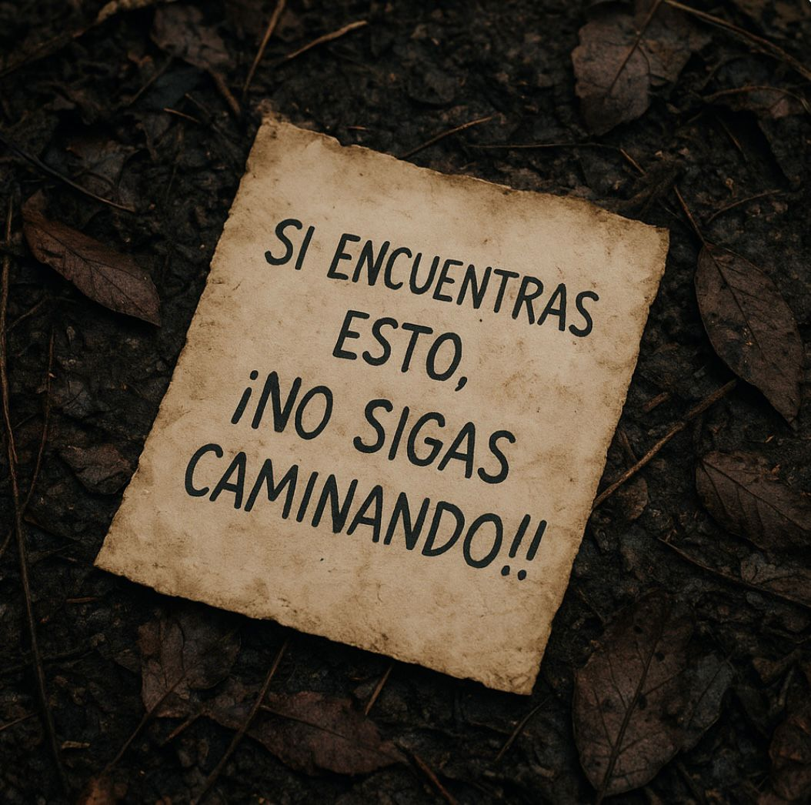
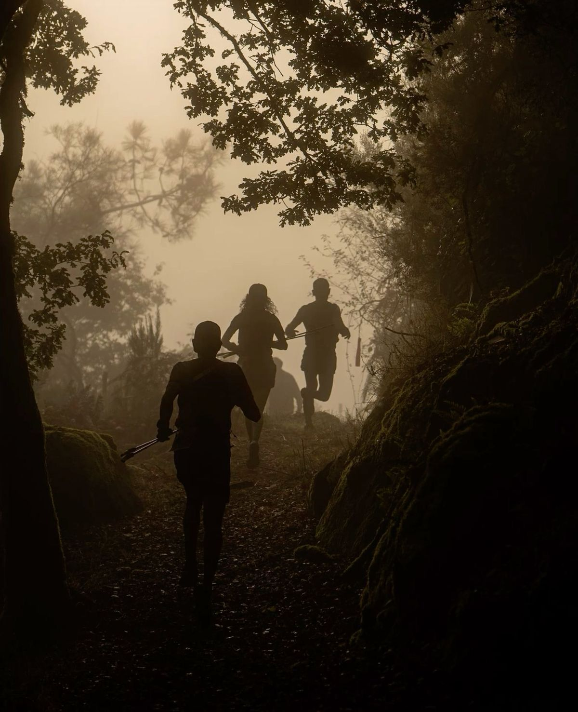
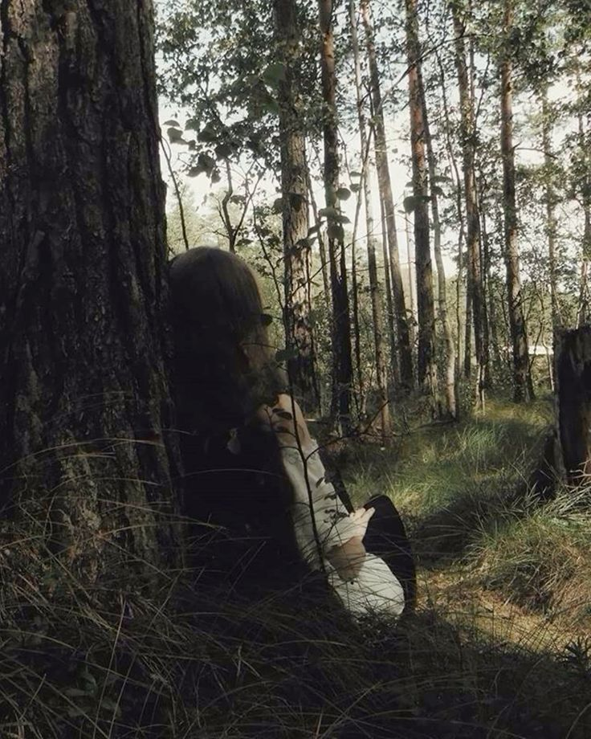

-Bueno, sigamos investigando el bosque- dijo Sol
Nos alejamos de la cabaña y algunos quedamos con dudas de que podría haber ahí. Seguimos caminando hasta que sol habló. -chicos miren esto!- dijo sol mientras abría la carta que encontró en el piso que decía "si encuentras esto ¡¡no sigas caminando!!"  -¡ven! les dije que este lugar era raro- dijo noah -Tal vez sea una broma de alguien del pueblo, no va a pasar nada- Respondió Mateo -No lo sé, pero quiero irme- Dijo Noah -Tranquilo, estamos juntos, no va a pasar nada- Le respondió Abril -Es verdad, juntos no nos va a pasar nada- dije yo -si no nos vamos ahora, ¡yo me voy solo!-dijo Noah Después de que Noah haya dicho eso se escucharon pasos, como si nos estuvieran persiguiendo mientras las hojas secas se quebraban con cada uno de esos pasos. Miramos la carta nuevamente y notamos como el texto había cambiando y decía "Corran, los encontraron" -¡Chicos hay que irnos!- dijo Noah Todos corrimos en dirección opuesta tratando de escondernos mientras los pasos se escuchaban más cerca acompañados de un silbido.  Pude llegar a unos árboles así que me escondí ahí sin hacer ruido pensando en si mis amigos estaban bien, hasta que de repente pude escuchar como ese ser decía "Ya es tarde para ustedes" me moría de miedo, fue la experiencia más aterradora que había vivido hasta ahora. A lo lejos podía escuchar gritos, temia que algo les haya pasado, quería irme pero tenía que buscar a mis amigos pero a la vez queria irme corriendo sin mirar atras.  Irme y esperar a que ellos salgan Buscarlos